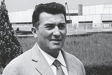
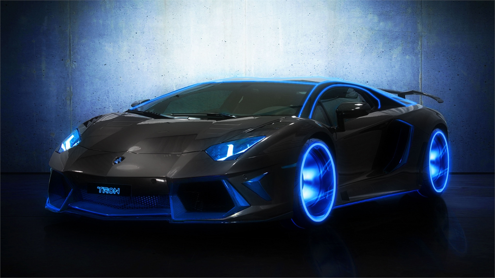

兰博基尼（英文：Lamborghini）
兰博基尼（英文：Lamborghini），内地通常称为兰博基尼，广东、香港译为林宝坚尼，台湾译为蓝宝坚尼或蓝宝基尼。其创始人是费鲁吉欧·兰博基尼（Ferruccio Lamborghini）于1916年出生在意大利北部，年轻时曾是意大利皇家空军的一名机械师，由于工作的原因，费鲁吉欧对机械原理非常熟悉。
二战之后，大量的军用物资被遗弃，费鲁吉欧·兰
博基尼开始使用这些剩余军用物资制造拖拉机，并成立了最初的兰博基尼公司（Lamborghini Trattori S.p.A.），主营业务是制造拖拉机、燃油器和空调系统。20世纪50年代中期，由于对机械原理和机械制造的精通，以及极佳的商业头脑，兰博基尼公司成为了当时最大的农用机械制造商。
事业成功的费鲁吉欧·兰博基尼极为喜欢跑车，拥有包括阿尔法·罗密欧、蓝旗亚、玛莎拉蒂、梅赛德斯-奔驰等多款名车。1958年费鲁吉欧·兰博基尼拥有了自己第一辆法拉利250 GT，而兰博基尼最终转为制造自己的汽车也是源于自己所拥有的250 GT。
创建历程
- 兰博基尼汽车公司（Automobili Lamborghini S.p.A.）是一家坐落于意大利圣亚加塔·波隆尼（Sant'Agata Bolognese）的跑车制造商，公司由费鲁吉欧·兰博基尼在1963年创立。早期由于经营不善，于1980年破产；数次重组后，1998年归入奥迪旗下，现为大众集团（Volkswagen Group）旗下品牌之一。兰博基尼的标志是一头充满力量、正向对方攻击的斗牛，与大马力高性能跑车的特性相契合，同时彰显了创始人斗牛般不甘示弱的个性。费鲁齐欧·兰博基尼（一作“费鲁吉欧·兰博基尼”）曾是一个生活在意大利北部的艾米利亚-罗马涅大区费拉拉省的青年。在二战期间是一名意大利皇家空军的机械师，在那之后他进入一个家基于二战军事设施建造的商业拖拉机厂。

- 在20世纪50年代中期，兰博基尼的拖拉机厂，即兰博基尼拖拉机有限公司，已成为全国最大的农业设备制造商之一。同时他还拥有一个成功的燃气热水器和空调生产商。1958年，他购买了第一辆法拉利汽车，一台250GT兰博基尼，之后又买了一些。费鲁齐欧·兰博基尼很喜欢法拉利汽车，但是他认为，对于普通的道路来说，法拉利汽车显得十分粗狂和嘈杂，显然更适合赛道。当费鲁齐欧·兰博基尼的法拉利汽车离合器出现问题后，他发现法拉利所使用的汽车离合器竟然和兰博基尼拖拉机所使用的离合器一模一样。费鲁齐欧·兰博基尼去找法拉利要求其更换一个质量更好的离合器却遭到了拒绝。法拉利说，费鲁齐欧·兰博基尼只是一个拖拉机制造商，因此对于运动跑车他一无所知。于是兰博基尼觉得建立一个汽车制造工厂来实现他对于运动跑车的完美追求。
- Lamborghini在中国大陆的官方译名为“兰博基尼”，粤港地区称之为林宝坚尼，台湾地区则将其译为蓝宝坚尼或蓝宝基尼。兰博基尼汽车公司是一家坐落于意大利圣亚加塔·波隆尼的跑车制造商。公司由费鲁吉欧·兰博基尼在1963年创立。创始人费鲁吉欧·兰博基尼年轻时曾是意大利皇家空军的一名机械师，由于工作的原因，费鲁吉欧对机械原理非常熟悉。二战之后，大量的军用物资被遗弃，费鲁吉欧·兰博基尼开始使用这些剩余军用物资制造拖拉机，并成立了最初的兰博基尼公司，主营业务是制造拖拉机、燃油器和空调系统。20世纪50年代中期，由于对机械原理和机械制造的精通，以及极佳的商业头脑，兰博基尼公司成为了当时最大的农用机械制造商。
发展历程
| 年度 |
经营者/经营公司 |
股/年份 |
性质 |
| 1963年－1972年 |
费鲁吉欧·兰博基尼（Ferruccio Lamborghini） |
100%/1963年－1972年
49%/1972年－1974年 |
实际经营
协助经营 |
| 1972年－1977年
| 乔治·亨利·罗塞帝（Georges-Henri Rossetti）
勒内·莱莫（René Leimer） |
51%/1972年－1977年
49%/1974年－1977年 |
实际经营
股份持有 |
| 1977年－1984年 |
休伯特·哈内（Hubert Hahne）
雷蒙德·诺依玛（Raymond Noima）
佐坦·雷帝（Zoltan Reti）
乔治·米龙（Giorgio Mirone）
阿莱桑德罗·阿特斯（Alessandro Artese） |
？%/1977年—1978年
？%/1977年—1978年
100%/1977年－1978年
？%/1978年－1984年
？%/1978年－1984年 |
实际经营
股份持有
宣告破产
债权持有
债权持有 |
| 1984年－1987年 |
帕特里克·米勒曼（Patrick Mimram） |
？%/1980年—1984年 |
实际经营 |
| 1987年－1994年 |
克莱斯勒/李·艾科卡（Lee Iacocca） |
100%/1987年—1994年 |
实际经营 |
| 1994年－1995年 |
Megatech Control Ltd |
100%/1994年－1995年 |
实际经营 |
| 1995年－1998年 |
V'Power Corporation Mycom
汤米·苏哈托（Tommy Suharto） |
40%/1995年－1998年
60%/1995年－1998年 |
实际经营
股份持有 |
| 1998年－至今 |
奥迪汽车/大众集团 |
100%/1998年－至今 |
实际经营 |
©2017 年兰博基尼汽车有限公司版权所有。兰博基尼汽车有限公司是一家隶属奥迪集团的单一股东公司。保留所有权利。增值税号码：IT 00591801204 津ICP备15001327号 logo ICP京公网安备 11010502032604号